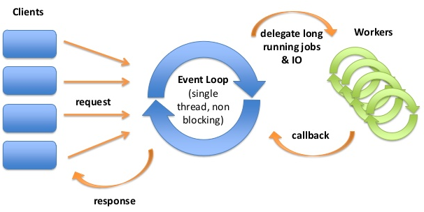

Reactor (Реактор)

Паттерн проектирования Reactor
Описание Reactor
Реактор (англ. Reactor) — предназначен для синхронной передачи запросов сервису от одного или нескольких источников.
Шаблон проектирования реактора представляет собой шаблон обработки событий для обработки запросов на обслуживание, передаваемых одновременно обработчику услуг одним или несколькими входами. Обработчик сервиса затем демультиплексирует входящие запросы и отправляет их синхронно связанным обработчикам запросов.
Структура:
- Ресурсы Любой ресурс, который может обеспечить ввод или потребление выходных данных из системы.
- Синхронный демультиплексор событий Использует цикл событий для блокировки всех ресурсов. Демультиплексор отправляет ресурс диспетчеру, когда можно запустить синхронную операцию на ресурсе без блокировки (пример: синхронный вызов read () будет блокироваться, если нет данных для чтения. Демультиплексор использует select () на ресурс, который блокируется до тех пор, пока ресурс не будет доступен для чтения. В этом случае синхронный вызов read () не будет блокироваться, а демультиплексор может отправить ресурс диспетчеру.)
- Диспетчер Обрабатывает регистрацию и отмена регистрации обработчиков запросов. Отправляет ресурсы из демультиплексора в соответствующий обработчик запросов.
- Обработчик запросов Обработчик обработанного приложения и связанный с ним ресурс.
Плюсы:
Модель реактора полностью отделяет конкретный код приложения от реализации реактора, что означает, что компоненты приложения можно разделить на модульные, повторно используемые детали. Кроме того, из-за синхронного вызова обработчиков запросов шаблон реактора допускает простой параллельный анализ, не добавляя сложность нескольких потоков в систему.
Минусы
Модель реактора может быть сложнее отлаживать, чем процедурный шаблон из-за перевернутого потока управления. Кроме того, только синхронно обрабатывая обработчики запросов, шаблон реактора ограничивает максимальный параллелизм, особенно на симметричном многопроцессорном оборудовании. Масштабируемость шаблона реактора ограничена не только вызовом обработчиков запросов синхронно, но и демультиплексором.
Паттерн описан Андреем Болониным.